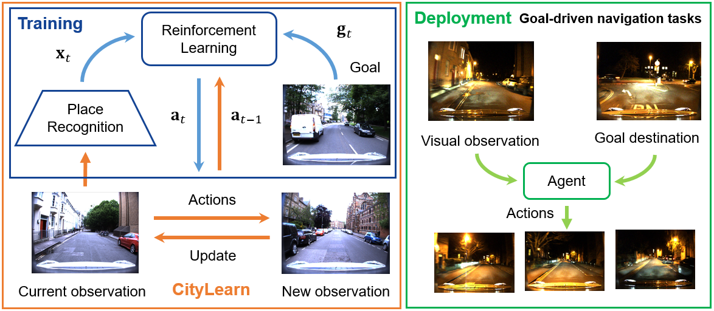

Marvin Chancán Michael Milford Queensland University of Technology, Australia
2020 IEEE International Conference on Robotics and Automation (ICRA)

Abstract
Visual navigation tasks in real world environments
often require both self-motion and place recognition feedback.
While deep reinforcement learning has shown success in solving
these perception and decision-making problems in an end-toend
manner, these algorithms require large amounts of experience
to learn navigation policies from high-dimensional inputs,
which is generally impractical for real robots due to sample
complexity. In this paper, we address these problems with two
main contributions.We first leverage place recognition and deep
learning techniques combined with goal destination feedback
to generate compact, bimodal images representations that can
then be used to effectively learn control policies at kilometer
scale from a small amount of experience. Second, we present
an interactive and realistic framework, called CityLearn, that
enables for the first time the training of navigation algorithms
across city-sized, real-world environments with extreme environmental
changes. CityLearn features over 10 benchmark
real-world datasets often used in place recognition research
with more than 100 recorded traversals and across 60 cities
around the world. We evaluate our approach in two CityLearn
environments where our navigation policy is trained using a
single traversal. Results show our method can be over 2 orders
of magnitude faster than when using raw images and can also
generalize across extreme visual changes including day to night
and summer to winter transitions.
@inproceedings{
CityLearn2020,
author = {M. {Chanc\'an}, and M. J. {Milford}},
booktitle={2020 IEEE International Conference on Robotics and Automation (ICRA)},
title={CityLearn: Diverse Real-World Environments for Sample-Efficient Navigation Policy Learning},
year={2020},
volume={},
number={},
pages={1-8},
keywords={Visual-Based Navigation; Visual Learning; Deep Learning in Robotics and Automation},
doi={},
ISSN={},
month={May}
}